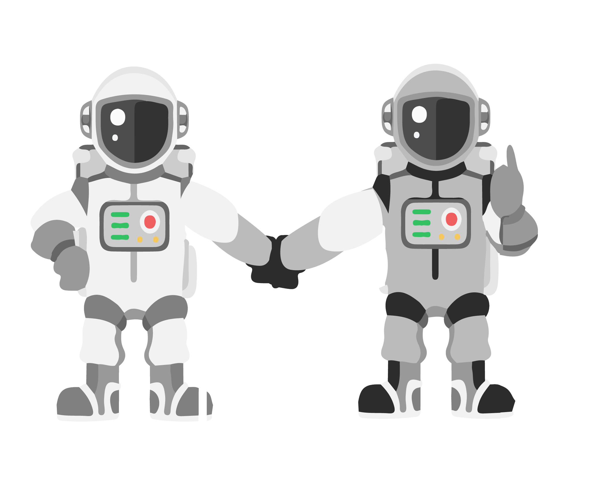
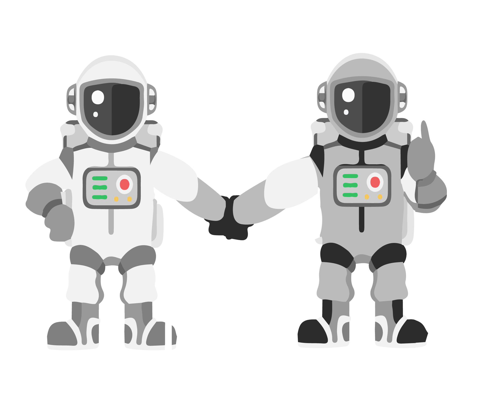

Réduction des gaz RWA
pour nouvelle cible ROE.

Forecasts du groupe à la baisse,
nécessité de moins consommer.

Vos résultats sont bons, votre consommation de RWA est OK... Poursuivez...
Réduction des gaz RWA
pour nouvelle cible ROE.
Forecasts du groupe à la baisse,
nécessité de moins consommer.

Forecasts en ligne avec le nouvel objectif
Attention crise en vue
Préparez à être agile (FG, RWA)
Ayez de la liquidité


Un univers en perpétuel mouvement
qui incite la fusée et
la base à se moderniser


Demande d'assistance
à l'atterrissage aux résultats
de fin d'année

 
